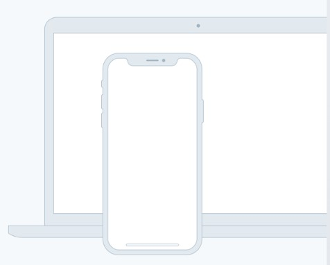

Source helps creators do more of what they love
A device that enables collaboration will lessen the chance of work having to be completely redone.

A device that enables collaboration will lessen the chance of work having to be completely redone.

In such a test, the user performs realistic tasks by interacting with the paper prototype
These techniques of paper prototyping used for usability testing are comps, wireframes
Rapid prototyping involves a group of designers who each create a paper prototype
In such a test, the user performs realistic tasks by interacting with the paper prototype